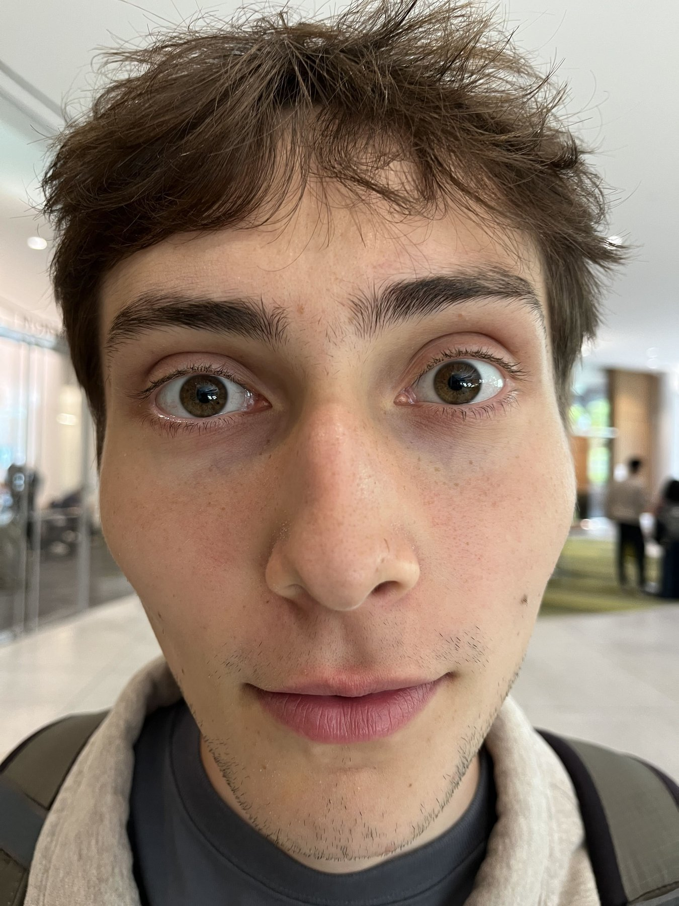
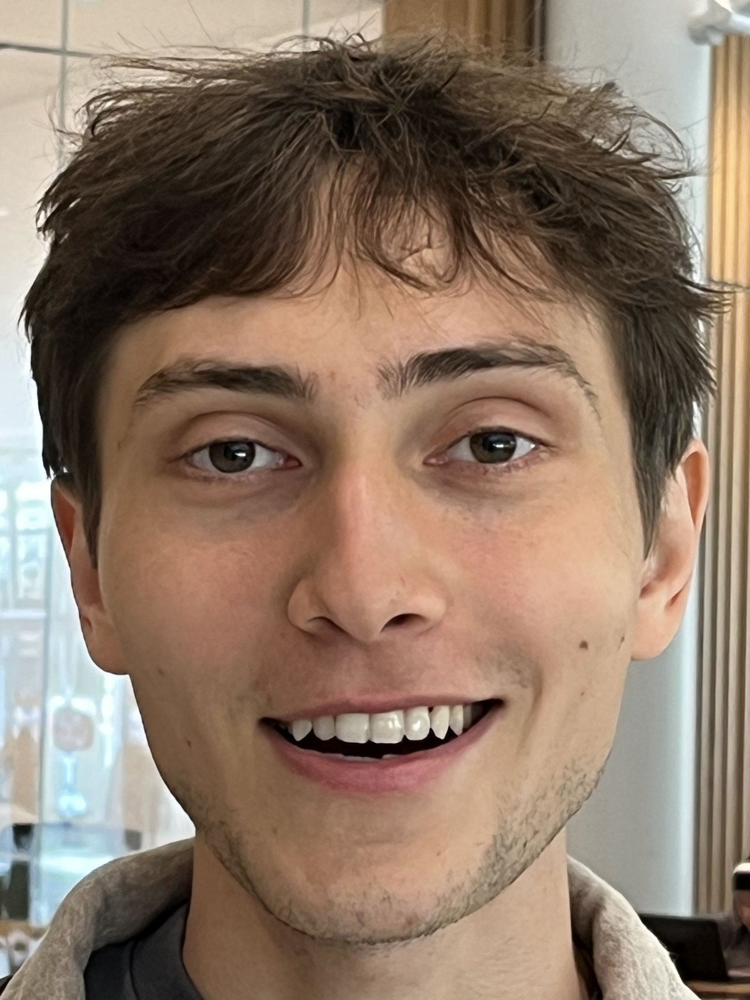
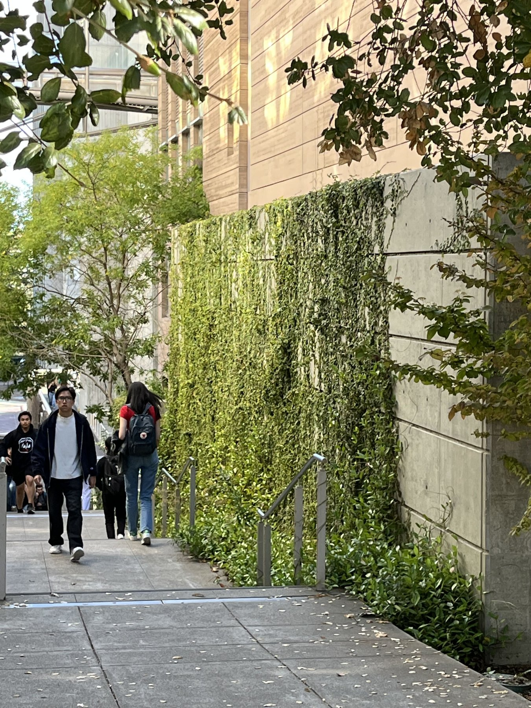
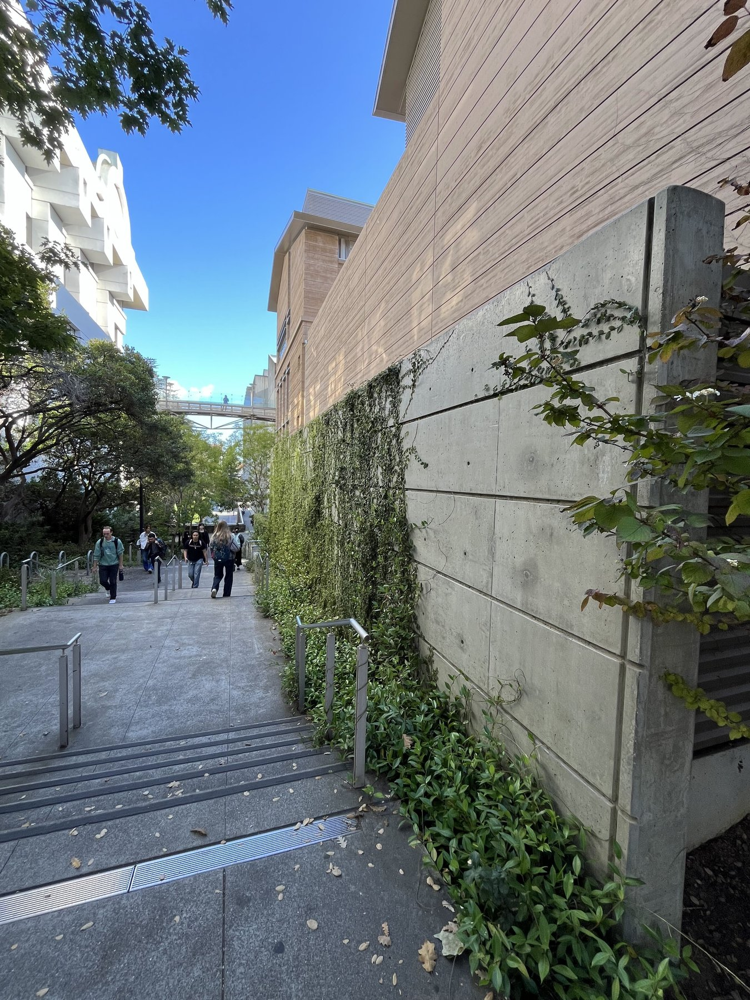
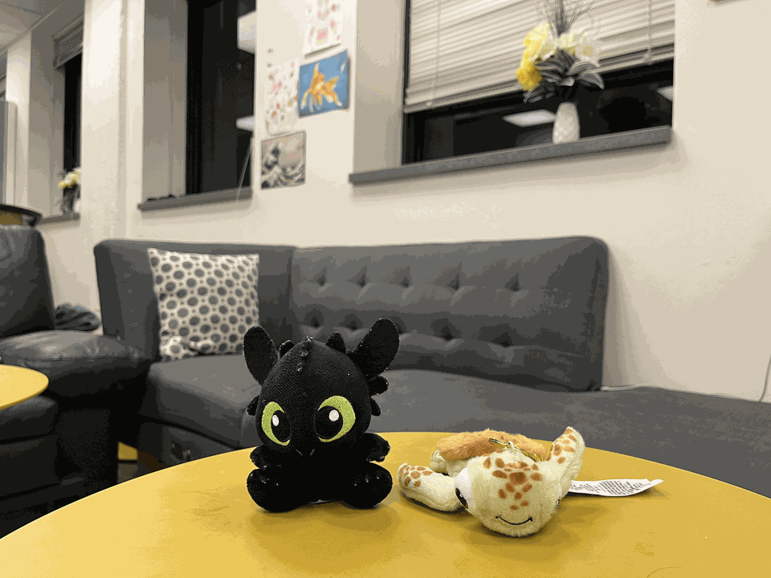

Part 1
Took a picture of my friend Manav! The first image was taken really close to his face, while the second one was taken by taking a step back and zooming in. Since the facial structures are roughly the same size, then the only variable left responsible for the distortion is the position of the camera. The close up image over represents certain facial features such as the nose which is no longer exaggerated in the zoomed in image.


Part 2
While walking out from Cory Hall! I was presented with this bustling scene! Once again we see the effect of distance. The first image is taken far away and zoomed in. The features especially regarding the gray wall seem compressed and proportional. However, the second image with no zoom, shows a stronger perspective.


Part 3
